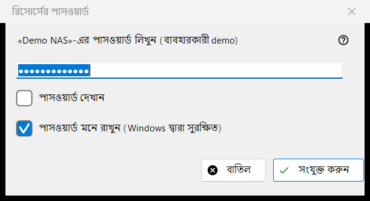
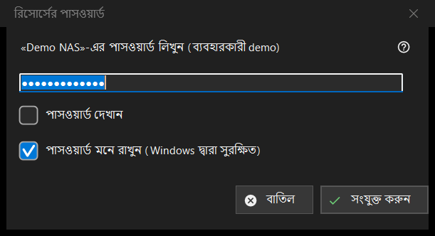

রিসোর্সের পাসওয়ার্ড
এটি কীসের জন্য
একটি সংরক্ষিত সার্ভার বা নেটওয়ার্ক ফোল্ডারের পাসওয়ার্ড চায়। এটি খোলে যখন আপনি এমন রিসোর্স খোলেন যার পাসওয়ার্ড সংরক্ষিত নেই, যখন সংরক্ষিত পাসওয়ার্ড প্রত্যাখ্যাত হয়, যখন সার্ভারের গন্তব্য ফোল্ডার বা কোনো আমদানির পাসওয়ার্ড লাগে, এবং PIN দিয়ে সুরক্ষিত ফোল্ডারের জন্য রিসোর্সের PIN শিরোনামে।


এই ক্রমে
- পাসওয়ার্ড টাইপ করুন; সেটি ঢাকা থাকে, আর পাসওয়ার্ড দেখান সেটি দেখায়।
- পাসওয়ার্ড মনে রাখুন (Windows দ্বারা সুরক্ষিত) বিকল্পে টিক রাখবেন কি না ঠিক করুন।
- সংযুক্ত করুন (Enter) চাপুন, অথবা থামাতে বাতিল (Esc)।
উপাদানসমূহ
পাসওয়ার্ড
ইঙ্গিতে রিসোর্স ও ব্যবহারকারীর নাম থাকে। পাসওয়ার্ড ঠিক যেমন টাইপ করা হয়েছে তেমনই ধরা হয়, স্পেসসহ। ঘর খালি থাকলে এই বার্তা আসে: পাসওয়ার্ড লিখুন। পাসওয়ার্ড দেখান বিকল্পটি শুরুতে বন্ধ থাকে।
পাসওয়ার্ড মনে রাখুন
বাক্সটি ডিফল্টভাবে টিক দেওয়া থাকে। টিক থাকলে পাসওয়ার্ড Windows দ্বারা আপনার অ্যাকাউন্টের জন্য এনক্রিপ্ট করে রাখা হয়, এবং কেবল তখনই যখন সংযোগ সেটিকে সঠিক প্রমাণ করেছে; টিক না থাকলে সেটি শুধু বর্তমান রানের জন্য মেমরিতে থাকে। যেখানে পাসওয়ার্ড এমনিতেই সংরক্ষিত হয়, যেমন সেটিংস ফাইল আমদানির সময়, সেখানে এবং PIN মোডে বাক্সটি লুকানো থাকে।
প্রত্যাখ্যাত পাসওয়ার্ড
সার্ভার আগের পাসওয়ার্ড প্রত্যাখ্যান করলে উইন্ডো আবার জিজ্ঞেস করে এবং একটি লাইন দেখায়: পাসওয়ার্ড গ্রহণ করা হয়নি। আবার লিখুন।
PIN মোড
PIN দিয়ে সুরক্ষিত ফোল্ডারের শিরোনাম হয় রিসোর্সের PIN এবং ইঙ্গিত নাম-করা রিসোর্সের PIN চায়। মনে রাখার বাক্স থাকে না, আর প্রত্যাখ্যাত PIN-এ এই বার্তা আসে: PIN প্রত্যাখ্যাত হয়েছে। আবার লিখুন।